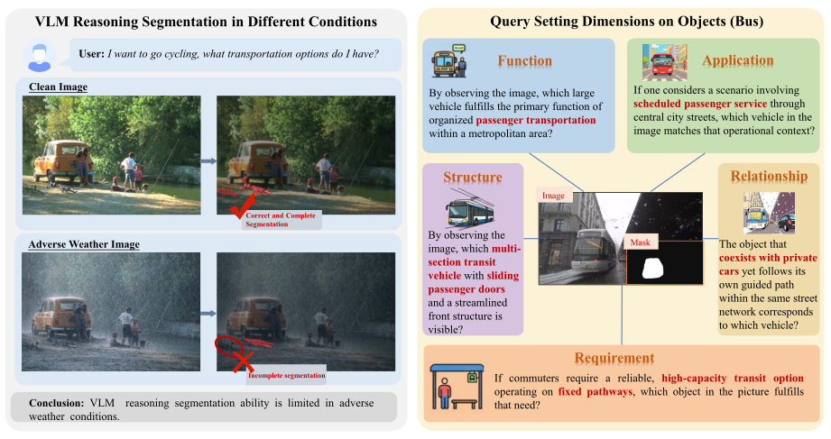
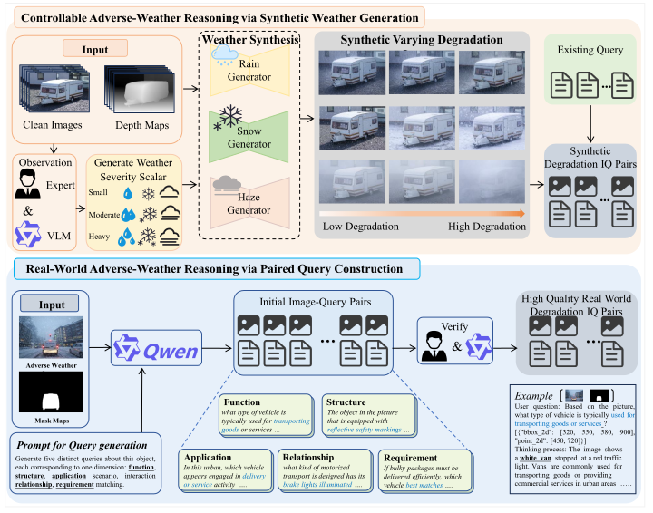
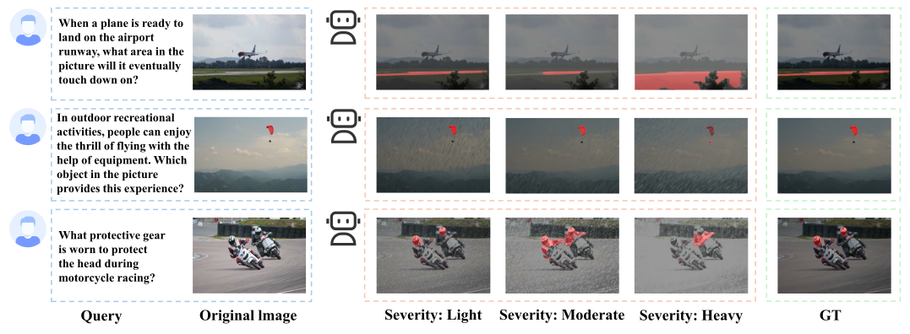
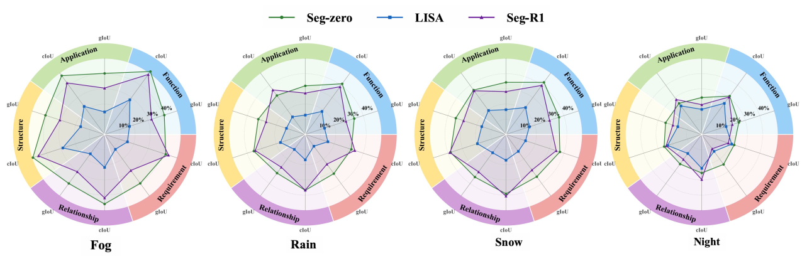

Controllable synthetic benchmark
8,811 image-query pairs generated with physics-guided fog, rain, and snow models at light, moderate, and heavy severity.
FogRainSnow

WeatherReasonSeg is the first benchmark dedicated to reasoning segmentation under adverse weather. It combines controllable physics-guided weather synthesis with real-world degraded scenes and pixel-level masks, revealing how rain, snow, fog, and darkness disrupt not only visual perception but also high-level semantic reasoning and spatial grounding.
Reasoning segmentation requires vision-language models to interpret a natural-language query, identify the intended object through semantic reasoning, and produce a pixel-accurate mask. Existing benchmarks largely assume clean visual conditions, leaving model reliability under adverse weather insufficiently understood.
WeatherReasonSeg addresses this gap with complementary synthetic and real-world benchmarks. The synthetic track applies physically interpretable fog, rain, and snow at controlled severity levels while preserving the original reasoning queries and masks. The real-world track pairs naturally degraded scenes with masks and structured queries spanning Function, Application, Structure, Relationship, and Requirement. Extensive evaluation shows that visual degradation propagates into semantic association and spatial grounding, with higher-level contextual reasoning particularly vulnerable.
A graded stress test for weather-aware visual-language reasoning.
8,811 image-query pairs generated with physics-guided fog, rain, and snow models at light, moderate, and heavy severity.
35,910 image-query pairs from naturally degraded scenes, with masks, boxes, and mask-guided queries designed around five reasoning dimensions.
Controlled degradation and real-world query construction form two complementary evaluation tracks.
Clean images, depth maps, and expert-calibrated weather generators create synthetic examples with interpretable severity control. For real-world data, mask-guided vision-language generation proposes object-consistent queries, followed by human-model collaborative filtering for semantic alignment, answerability, and reasoning validity.

Adverse weather exposes coupled failures in perception, reasoning, and grounding.


Across models and metrics, performance drops from clean to light, moderate, and heavy degradation.
A large gap persists between segmentation with known spatial prompts and language-guided reasoning.
Application and Requirement queries degrade more strongly than visible Structure and Function cues.
If you find WeatherReasonSeg useful, please cite our paper.
@inproceedings{du2026weatherreasonseg,
title = {WeatherReasonSeg: A Benchmark for Weather-Aware Reasoning Segmentation in Visual Language Models},
author = {Du, Wanjun and Yuan, Zifeng and Chen, Tingting and Ke, Fucai and Lin, Beibei and Zhang, Shunli},
booktitle = {European Conference on Computer Vision (ECCV)},
year = {2026}
}